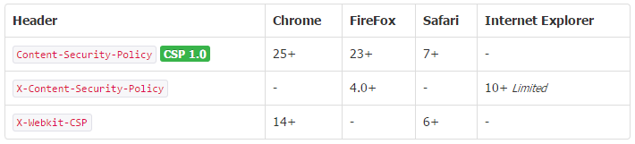

概念
内容安全策略(Content-Security-Policy，CSP)：是一种web应用技术用于帮助缓解大部分类型的内容注入攻击，包括XSS攻击和数据注入等，这些攻击可实现数据窃取、网站破坏和作为恶意软件分发版本等行为。该策略可让网站管理员指定客户端允许加载的各类可信任资源。
浏览器支持

统计来源：caniuse.com/contentsecuritypolicy & Mozilla
指令参考
Content-Security-Policy 响应头的值可配置一个或多个，多个指令以分号;隔开。
| 指令 | 示例 | 描述 |
|---|---|---|
| default-src | ‘self’ cdn.example.com | 默认配置，若其他指令没有配置，都以此配置的规则为准 |
| script-src | ‘self’ js.example.com | 定义允许加载的JavaScript来源 |
| style-src | ‘self’ css.example.com | 定义允许加载的样式表来源 |
| img-src | ‘self’ img.example.com | 定义允许加载的图片来源 |
| connect-src | ‘self’ | 适用于XMLHttpRequest(AJAX),WebSocket或EventSource，当为不允许的来源，浏览器返回一个400的状态码。 |
| font-src | font.example.com | 定义允许加载的字体来源 |
| object-src | ‘self’ | 定义允许加载的插件来源.eg,<object>,<embed>或<applet> |
| media-src | media.example.com | 定义允许加载的audio和video.eg,HTML5,<audio>,<video>元素 |
| frame-src | ‘self’ | 定义允许加载的框架来源 |
| sandbox | allow-forms allow-scripts | 授权一个沙箱用来请求具有iframe sanbox等类似属性的资源,该沙箱默认为同源策略,禁止弹出窗口,执行插件和脚本.若要允许其他,可增加配置:allow-forms,allow-same-origin,allow-scripts,allow-top-navigation |
| report-uri | /some-report-uri | 该配置让浏览器发送一个失败报告到指定的路径，也可以增加-Report-only到HTTP头,让浏览器只发送报告(不做阻止动作) |
来源配置参考
所有的指令都要在配置后面添加来源列表，多个来源列表可用空格隔开，*和none只能存在一个。
| 指令 | 示例 | 描述 |
|---|---|---|
| * | img-src * | 无限制，允许所有 |
| ‘none’ | object-src ‘none’ | 禁止加载任何路径的资源 |
| ‘self’ | script-src ‘self’ | 允许加载同源的资源 |
| data: | img-src ‘self’ data: | 允许通过数据模式加载资源 |
| domain.ccc.com | img-src img.ccc.com | 允许加载匹配域名的资源 |
| *.ccc.com | img-src *.ccc.com | 允许加载匹配域名的资源 |
| https://img.ccc.com | img-src https://img.ccc.com | 允许加载匹配https方式的域名资源 |
| https: | img-src https: | 允许加载所有匹配https方式的资源 |
| ‘unsafe-inline’ | script-src ‘unsafe-inline’ | 允许使用内联元素,类似,Style attribute,onclick,scripttag bodies |
| ‘unsafe-eval’ | script-src ‘unsafe-eval’ | 允许不安全的动态编码，例如eval() |
例子
-
只允许加载同源的所有资源
default-src 'self'; -
支持*号匹配
default-src 'self' https://*.ccc.com:*; -
只允许加载同源的脚本
script-src 'self'; -
只允许加载同源的和www.ccc.com的脚本
script-src 'self' www.ccc.com;
常见配置
-
该策略允许加载同源的图片、脚本、AJAX和CSS资源，并阻止加载其他任何资源，对于大多数网站是一个不错的配置。
default-src 'none'; script-src 'self'; connect-src 'self'; img-src 'self'; style-src 'self'; -
被禁止时的报错信息：
谷歌浏览器可通过谷歌开发工具查看该报错，通常是按F12
Refused to load the script ‘script-uri’ because it violates the following Content Security Policy directive: “your CSP directive”.
Firefox 可通过 Web Developer Tools 查看报错
Content Security Policy: A violation occurred for a report-only CSP policy (“An attempt to execute inline scripts has been blocked”). The behavior was allowed, and a CSP report was sent.
参考
http://content-security-policy.com/